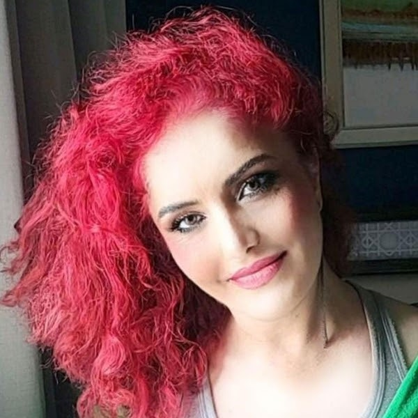

AboutHakkımda
Twenty-nine years, four countries,
one subjectYirmi dokuz yıl, dört ülke,
tek bir ders
I started teaching English in Konya in 1997 and have not stopped since. In between there was a master's degree in Minnesota, a summer teaching in Lanzhou, a Comenius programme in Lancaster, and a great many classrooms in Ankara.
İngilizce öğretmenliğine 1997'de Konya'da başladım ve o günden beri hiç bırakmadım. Arada Minnesota'da bir yüksek lisans, Lanzhou'da bir yaz, Lancaster'da bir Comenius programı ve Ankara'da pek çok sınıf vardı.

I hold a Master of Arts in Teaching English as a Second Language from Minnesota State University, Mankato, where I graduated with a 4.00 grade point average and wrote my thesis on how learners acquire vocabulary in Icelandic contexts. My undergraduate degree, from Selçuk University, was in English Language and Literature with a thesis on Noam Chomsky's language theories. Between those two degrees sits the thing that actually taught me to teach: years of ordinary lessons with students who were not going to be impressed by either.
Minnesota State University, Mankato'da İngilizceyi İkinci Dil Olarak Öğretme (TESL) alanında yüksek lisans yaptım; 4.00 ortalamayla mezun oldum ve tezimi öğrenenlerin İzlandaca bağlamında kelime edinimi üzerine yazdım. Lisans derecem Selçuk Üniversitesi'nde İngiliz Dili ve Edebiyatı; tezim Noam Chomsky'nin dil kuramları üzerineydi. Bu iki derecenin arasında ise bana öğretmenliği asıl öğreten şey duruyor: ikisinden de etkilenmeyecek öğrencilerle geçen yılların sıradan dersleri.
Today I teach at Ankara High School of Science, where I work with students in grades nine through twelve and coordinate the school's eTwinning projects with partner schools in Spain, Poland, Georgia and Romania. I am a Cambridge ESOL speaking examiner, an IELTS speaking specialist on the MEETS & TALKS academic speaking programme, and a project coordinator for the Defence Science High Schools education programme run by the Presidency of Defence Industries.
Bugün Ankara Fen Lisesi'nde 9–12. sınıflarla çalışıyorum ve okulun İspanya, Polonya, Gürcistan ve Romanya'daki ortak okullarla yürüttüğü eTwinning projelerini koordine ediyorum. Cambridge ESOL konuşma sınavı değerlendiricisiyim, MEETS & TALKS akademik konuşma programında IELTS konuşma uzmanıyım ve Savunma Sanayii Başkanlığı'nın Savunma Bilimleri Liseleri eğitim programında proje koordinatörüyüm.
Alongside school I have taught privately since 1998 — one to one, online and in person, for METU and Bilkent proficiency exams, for IELTS and TOEFL, and for the students who simply need English to stop being the thing standing in their way.
Okulun yanında 1998'den beri özel ders veriyorum — birebir, çevrimiçi ve yüz yüze; ODTÜ ve Bilkent yeterlilik sınavları için, IELTS ve TOEFL için ve İngilizcenin önlerinde durmayı bırakmasına ihtiyaç duyan öğrenciler için.
What I believe about learning a languageDil öğrenmek üzerine inandıklarım
A language is learned in use, not in preparation for useDil, kullanıma hazırlanırken değil, kullanılırken öğrenilir
My thesis was about vocabulary acquisition, and the finding that stayed with me is an unglamorous one: words are retained when they are met repeatedly in contexts the learner cares about, not when they are listed. That is why my lessons put the student in the position of having to say or write something real early, before they feel ready. Readiness is a result of use, not a precondition for it.
Tezim kelime edinimi üzerineydi ve aklımda kalan bulgu hiç parlak değil: kelimeler listelendiğinde değil, öğrencinin önemsediği bağlamlarda tekrar tekrar karşılaşıldığında akılda kalıyor. Bu yüzden derslerimde öğrenciyi, kendini hazır hissetmeden önce gerçek bir şey söylemek ya da yazmak zorunda bırakırım. Hazır olmak, kullanmanın sonucudur; ön koşulu değil.
The four skills are not four subjectsDört beceri, dört ayrı ders değildir
Reading feeds writing; listening feeds speaking; and grammar is what holds all of it together rather than a topic of its own. I teach with integrated-skill, student-centred, multi-modal methods — which in practice means a single hour will usually move through more than one skill, because that is how the language behaves outside the room.
Okuma yazmayı besler, dinleme konuşmayı besler; dil bilgisi ise kendi başına bir konu değil, hepsini bir arada tutan şeydir. Bütünleşik beceri, öğrenci merkezli ve çok kipli yöntemlerle çalışırım — pratikte bu, bir dersin genellikle birden fazla beceriye uğraması demektir; çünkü dil, sınıfın dışında böyle davranır.
A student is a person before an exam candidateÖğrenci, sınav adayı olmadan önce bir insandır
I trained as an NLP practitioner and cognitive coach, and I use it for something narrow and specific: the anxiety that makes a capable student go silent in a speaking exam, or blank in a reading paper they could otherwise pass. Supporting a student's academic success is inseparable from supporting their personal and social growth, and I have never seen a case where ignoring the second improved the first.
NLP uygulayıcısı ve bilişsel koç eğitimi aldım ve bunu dar, belirli bir amaçla kullanıyorum: yetkin bir öğrenciyi konuşma sınavında susturan ya da geçebileceği bir okuma bölümünde donduran kaygı için. Bir öğrencinin akademik başarısını desteklemek, kişisel ve sosyal gelişimini desteklemekten ayrılamaz; ikincisini yok saymanın birincisini iyileştirdiği tek bir örnek görmedim.
Honest assessment, earlyDürüst değerlendirme, erkenden
I have written, administered and evaluated achievement tests for most of my career, and I have examined speaking for Cambridge. It has made me blunt about timelines. If a target band is not reachable by a given date, the useful thing is to say so in the first meeting and rebuild the plan around what is reachable — not to sell the lessons and discover it in month three.
Kariyerimin büyük bölümünde başarı testleri yazdım, uyguladım ve değerlendirdim; Cambridge için konuşma sınavı yaptım. Bu beni takvimler konusunda açık sözlü yaptı. Hedeflenen puan belirli bir tarihte ulaşılabilir değilse, yapılacak yararlı şey bunu ilk görüşmede söylemek ve planı ulaşılabilir olanın etrafında yeniden kurmaktır — dersleri satıp bunu üçüncü ayda keşfetmek değil.
Classrooms should open outwardsSınıflar dışarı açılmalı
Much of my work over the past fifteen years has been about getting students out of the room: eTwinning projects with schools in five countries, Erasmus+ partnerships, Model United Nations, international essay competitions, an English olympiad. A student who has written for a real audience in another country reads their own homework differently afterwards.
Son on beş yıldaki işimin büyük bölümü öğrencileri odadan çıkarmakla ilgiliydi: beş ülkedeki okullarla eTwinning projeleri, Erasmus+ ortaklıkları, Model Birleşmiş Milletler, uluslararası deneme yarışmaları, bir İngilizce olimpiyatı. Başka bir ülkedeki gerçek bir okur için yazmış bir öğrenci, sonrasında kendi ödevini de farklı okur.
How I got hereBuraya nasıl geldim
- 1997–98KonyaKonya
First post, at Konya Karatay Anatolian High School — preparatory and ninth-grade English.
İlk görev, Konya Karatay Anadolu Lisesi — hazırlık ve 9. sınıf İngilizcesi.
- 1998–2006TosyaTosya
Eight years at Tosya High School and M. Boyner Anatolian High School, the last seven as head of the English department. Also taught English I and II at Ankara University's vocational school.
Tosya Lisesi ve M. Boyner Anadolu Lisesi'nde sekiz yıl; son yedisinde İngilizce zümre başkanı. Ayrıca Ankara Üniversitesi meslek yüksekokulunda English I ve II derslerini verdim.
- 2006–08Mankato, USAMankato, ABD
M.A. in TESL at Minnesota State University on the Sponberg International TESL Scholarship. Taught ESL to Somali, Mexican and Venezuelan adults at Lincoln Community Education Center, tutored across the university, hosted a radio programme and coordinated the Foreign Language Initiative.
Sponberg Uluslararası TESL Bursu ile Minnesota State University'de TESL yüksek lisansı. Lincoln Community Education Center'da Somalili, Meksikalı ve Venezuelalı yetişkinlere ESL öğrettim, üniversite genelinde özel ders verdim, bir radyo programı sundum ve Yabancı Dil Girişimi'ni koordine ettim.
- 2009Lanzhou, ChinaLanzhou, Çin
Foreign language expert at Lanzhou Jiaotong University for a summer, teaching two proficiency levels in an EFL setting.
Bir yaz boyunca Lanzhou Jiaotong Üniversitesi'nde yabancı dil uzmanı; EFL ortamında iki yeterlilik seviyesine ders verdim.
- 2009–15Ankara — private collegesAnkara — özel kolejler
MEV College science high school, Çankaya University, Ahmet Ulusoy College (TOEFL iBT and IB), Atlantic Colleges as head of English, and Just Private Language School as an education coach.
MEV Koleji Fen Lisesi, Çankaya Üniversitesi, Ahmet Ulusoy Koleji (TOEFL iBT ve IB), Atlantic Kolejleri'nde İngilizce bölüm başkanlığı ve Just Özel Dil Okulu'nda eğitim koçluğu.
- 2015–23Vice-principalMüdür yardımcılığı
Eight years at Mareşal Fevzi Çakmak Middle School as vice-principal and head of English. Teacher of the Year, 2016.
Mareşal Fevzi Çakmak Ortaokulu'nda sekiz yıl müdür yardımcısı ve İngilizce zümre başkanı. 2016 Yılın Öğretmeni.
- 2021–European projectsAvrupa projeleri
Erasmus+ and eTwinning coordinator at the Sincan directorate's R&D centre, reaching 179 schools; then eTwinning coordinator at Sincan Ersin Nazif Gürdoğan Anatolian High School, with a European Quality Label in 2024.
Sincan İlçe Millî Eğitim Müdürlüğü Ar-Ge Merkezi'nde Erasmus+ ve eTwinning koordinatörü, 179 okula ulaştım; ardından Sincan Ersin Nazif Gürdoğan Anadolu Lisesi'nde eTwinning koordinatörü — 2024'te Avrupa Kalite Etiketi.
- 2026Ankara High School of ScienceAnkara Fen Lisesi
English teacher, eTwinning coordinator and academic mentor — and, in the evenings, still a private tutor.
İngilizce öğretmeni, eTwinning koordinatörü ve akademik mentor — akşamlarıysa hâlâ özel ders öğretmeni.
Classrooms, projects, conferencesSınıflar, projeler, konferanslar